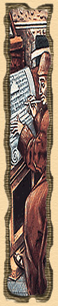

|
The merchants of Venice
|
|
 |
In his estimable book on the science of mathematics, the Franciscan friar Luca Pacioli describes methods of bookkeeping. This account is of great value and use to all the merchants in Venice. For, as Brother Luca states, there are three things necessary in business:
Brother Luca gives merchants detailed advice and examples for such necessary tasks as how to make an inventory and how to keep a ledger.
More bridges are necessary for a good merchant than a lawyer can make.
It is said that the head of the merchant has a hundred eyes and still they are not sufficient for all he has to say or do.
By being charitable you will not lose your riches.
Frequent accounting makes for long friendship.
Officials do not bother about details.
The merchant is like a rooster, which of all the animals is the most alert, and in winter and summer keeps his night vigils and never rests.
|